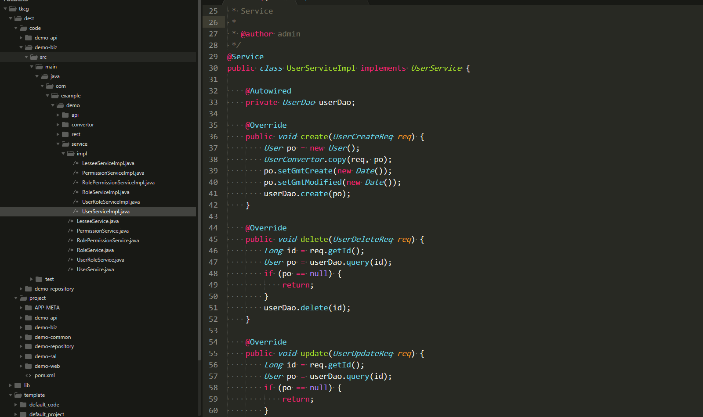

快速开始
- 演示两个常用示例
- 第一个示例生成spring-boot应用，项目结构可以个性化定制。
- 第二个示例生成业务代码， 代码结构也可以个性化定制， 逆向mysql数据库，包含model，dao，service，api，test等。
下载生成器
- 下载程序包，tkcg-cmd-1.6.0-bin.zip，并解压到本地
- 进入解压目录，并在解压目录打开命令行
- 运行程序，显示帮助
- windows用户运行命令
.\tkcg -h - mac用户运行命令
./tkcg -h
生成项目骨架
- 调用生成项目命令
- windows用户运行命令
.\tkcg -c template\project.yml - mac用户运行命令
./tkcg -c template/project.yml
- 查看解压目录下
./dest/project目录下生成的内容
生成业务代码
- 调用生成业务命令
- windows用户运行命令
.\tkcg -c template\code.yml - mac用户运行命令
./tkcg -c template/code.yml - 查看解压目录下
./dest/code目录下生成的内容 